【专访】一招断根的皮肤癣秘方，好的太快，网友直呼高手在民间
2018-10-12 阅读168567次
中医有句俗话：“外不治癣，内不治喘”、“良医不治癣，治癣必丢脸”，皮肤癣、白癜风等这些疑难皮肤病，得了就很难根治，疾病病程长，易复发，对人从生理到心理都产生巨大的折磨，有人说它是“不死的癌症”。
皮肤癣发病原因多种多样，内分泌失调、免疫功能紊乱、外伤等都有可能诱发皮肤癣，可以说是防不胜防，那么皮肤癣患者的出路到底在哪里？就这么和皮肤癣相互折磨到白头吗？
NO！NO！NO！
近期出了个火爆各大论坛、席卷各大微博的““绝癣苗方”在癣友圈引起巨大关注。此方特针对皮肤癣（手足股癣、头癣）有着奇效，好评率100%，无论多么严重的皮肤癣、白癜风、鱼鳞病等，不管去过医院没治好的，还是多年反复发作的，凡是用了胡教授的“绝癣苗方”，简直是用一个好一个！
胡教授曾经跟很多皮肤癣患者打赌说：任何人都可以试一试，绝不会出现无效的情况！
胡教授，他是谁？
他就是著名的
祛癣大师——胡清东。胡教授27年专业从事皮肤癣的医药攻克研究，治愈过皮肤癣等疑难皮肤病数十万例，敢用自己半辈子的名声为他的“绝癣苗方”打包票，专治皮肤癣，不留后患！胡教授的医馆微信刚开三个月，已经有上万忠实粉，不用挂号，不用等待，只要患者报个年龄，发张照片，他就能给出治疗建议。
“不论你什么皮肤病诱因，得病多少年，只要你在微信找我，免费开方，不出三个周期，即可远离毒癣折磨！”
“医者仁心，药者慧心。我都活了这么大岁数了，至今在我的医馆看的病、开的方，从来都是一病一方，一人一药，还从来没有怠慢过。”
(以下为患者真实案例讲述)
我的皮肤病很多年了，2012年10月份左右，我早上起床，突然发现背后有一点脱皮，有点小痒，也没当回事，更别说上医院了。大慨过了一个星期吧，可怕的皮肤癣并发症发作了，当时眼角、耳朵、鼻子、嘴巴溃疡，同时发作，把我吓到了，才急忙上的医院检查。
郁闷的是眼睛和耳朵鼻子都不舒服。去看眼睛，医生就说我是角膜炎，看耳朵就说我是中耳炎，看鼻子就说是鼻窦炎，开了一大堆滴眼液，滴耳液，根本一点用也没有。
这是有一次洗澡完拍的照片，当时没洗澡不脱衣服之前还看不出来什么，洗完澡一看还是挺吓人的。
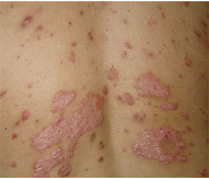
(这是当时的照片，幸好没删，发上来让大伙看看)
没上医院之前，根本就没听过什么叫银肖病，皮肤癣到是听说过（归功于路边经常贴的小广告），不过完全都没重视，当时医生开了维胺脂胶囊，消银颗粒，氮卓斯汀片。回家后我也是断断续续的吃，就这样一直拖到12月份。
当时咳嗽了差不多一个月，背部皮肤癣也越来越严重了，下面的2013年1月份的图片。
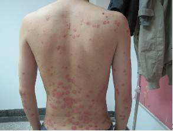
病情一直持续到2017年，大概春节左右，战友10周年聚会，我当时的班长是贵州人，他得知我的情况，给我推荐了一位老师，刚好就是他们贵州的苗医大师胡教授。在微信上我和胡教授第一次聊了很久，他很和蔼，前前后后了解病情、诊断分析，大概3个多小时，让我明白了皮肤癣发病原因很多，终于搞清楚了自己的病因。
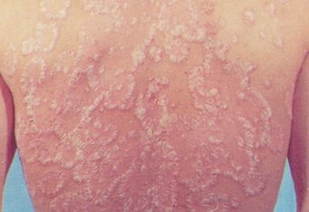
（这时候我的后背已经全部都是皮肤癣了）
他很认真的总结了我的病情，认为我的病，和幽门螺杆菌感染的胃病有很大关系。因为之前我提到过，我胃就经常不舒服，经常泛酸，而且我清楚的记得，我发现得病的前两个星期的一天晚上，发了一次很严重的胃疼，整整疼了我一晚上，我怀疑这就是我诱因。
当时我没有着急在治病我的皮肤问题，而是先是去医院照了下胃镜，结果是浅表性胃炎伴局灶糜烂，幽门螺杆菌呈阳性。当时我有个问题就是，到底是先治银屑病还是治胃病呢？想了半天，没有答案。
后来我又给胡老师发微信，他说皮肤癣是慢性病，不用急着治，胃是身体的基础，胃不治好很多病都没办法。我想想也是这个理，就先开始吃药治胃病，当时医生给我开的三联法杀幽门螺杆菌，吃了1个月的药。感觉胃好些了。
说真的，那段时间是我心情低谷的时候，感觉自己全身上下全部烂完了，完全没救了。
不过后来想想，我儿子还小，还要养一家人，一定要坚持过去，心态一定要搞好。到了3月份，胃病的药吃完了，我又开始犹豫要不要治皮肤癣，因为我看到好多网友都在说千万不能乱用药，会越治越严重。特别是很多人用了激素药，副作用非常明显。
我当时就想，这种说法是不是太极端了，有病不治难道就硬挺着，会不会越拖越严重呀？
想了半天，后来我还是决定找胡老师试一试，因为胡老师所用都药都是纯苗药、不含激素，而且他的方子是一人一药。
当时我后背特别痒了，随时随地都想要去挠，好像几万只蚂蚁在我后背爬一样。
胡老师说要擦药，于是我就脱了衣服趴在那。胡老师擦完药之后，我感觉很清爽。
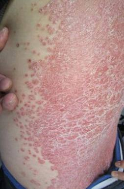
连续用了胡教授的疗法30多天吧，通过内服+外疗+洗护，我的背部已经能明显看到效果了。
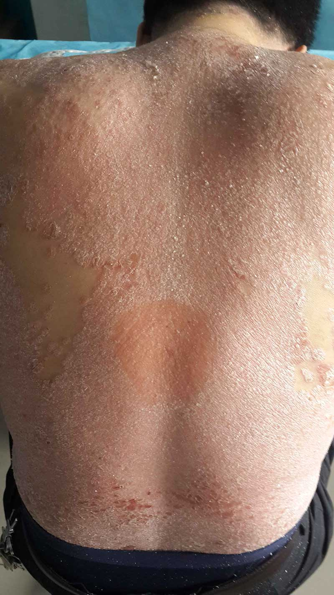
40天的时候，我对胡老师充满了信心！
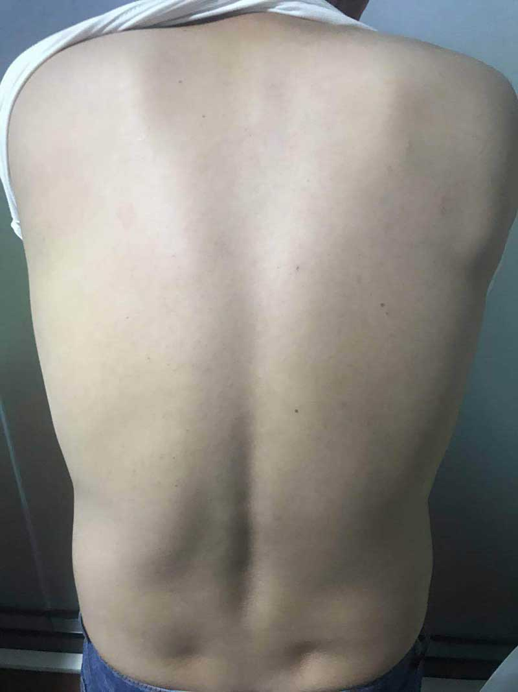
一直到现在，我的背部皮肤癣没有复发，夏天可以清清爽爽的度过了，再也不用整天痒痒的。在这里，我要感谢耐心和我交流的苗医胡老师，如果不是他的耐心和专业，我想我不会这么快康复！
胡教授医馆官方微信：
每天分享祛癣方法和经验
复制下方微信号，并在微信中搜索
治癣绝技，苗医大师——胡清东
胡清东老师今年65岁，别看他看起来像中医，其实她出生于苗医世家，祖上三代世代苗医世家，自幼耳濡目染，非常热爱苗医学，千年苗医、万年苗药，八百单方传天下，胡老师对苗医苗药的研究近乎痴迷的态度。后来把苗医和中医巧妙的结合一起，竟然开创性的研发出了皮肤病举世疗法，自此治好了很多皮肤疑难杂症。
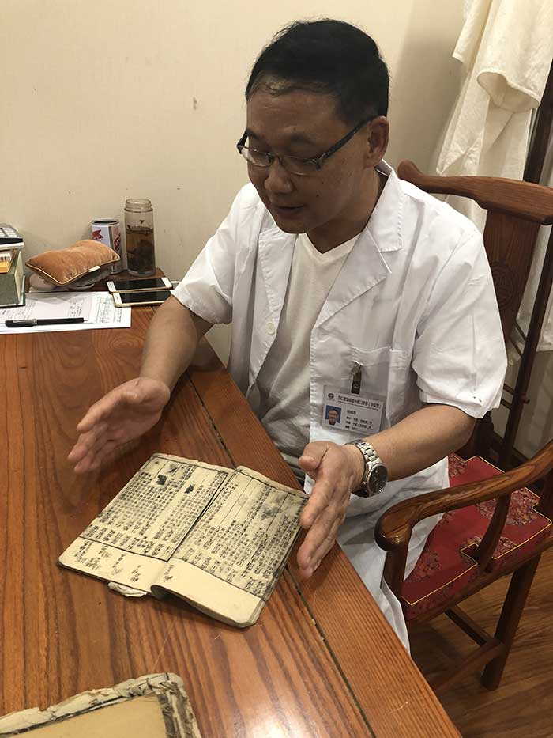
爷爷告诉她，他的先祖是明初大将沐英（西平侯黔宁王）军中名医，沐英征云南、讨西番，常年在边疆征战，山高极寒，易患黄水病，军士一旦发病，犹如数万只蚂蚁在患处爬行，抓挠针刺无济于事，严重者患处溃烂，而且传染性极强。史料记载，沐英的军中常发黄水病（皮肤病），军队战力急剧下降，随行军医胡老师的先祖用苗药半枫荷等数十味鲜药材熬制成药汤，将士每日全身汗蒸浸泡一个时辰，结果绝大多数患者结痂脱落，长出新皮肤，故称为“枫荷24味药浴秘法”。
（胡氏先祖随沐英将军征战多年，流传后世的除癣“药浴秘法”今存于“凯里市苗侗瑶医药博物馆”，成为镇馆之宝。）
所幸的事，沐英后面凯旋大功告成，胡教授的先祖也功成身退，衣锦还乡，回到今黔东南州凯里家乡后，先祖致力于悬壶济世，医术医德闻名方圆百里苗寨侗乡，特别是治疗皮肤癣黄水病（皮肤病）更是一绝，还留下了一些传世验方。
在从医的几十年的时间里，胡老师治愈的皮肤癣患者数不胜数，受到患者的拥护和爱戴，坐诊时经常坐一整天，他说患者来一次不容易，加班加点都要诊完最当天的患者。
他研发的“苗药疗法”，医治了五湖四海、大江南北的患者，上至达官贵人，下至平民百姓，无人不服。很多多年前找到胡教授看过病的患者，听说胡老师开了医馆微信问诊，都来加老师表示感谢和慰问。
胡教授医馆官方微信：
每天分享祛癣方法和经验
复制下方微信号，并在微信中搜索
清癣大揭秘，从内到外除病根
在先祖父留下的验方基础上，胡清东潜心研究出治癣办法，今天，胡老师把这个除癣配方公布于世，他说，因为他知道皮肤癣患者的痛苦，所提他拒绝很多想购买他方子挣钱的商家，不求名利，只为能解救那些深陷牛皮深渊中求助无门的患者们！
配方大揭秘：
是采用苗族流传千年的苗药清毒验方，选用苗山独有的名贵药材，提取蝎子、蜈蚣、蜂毒、蟾蜍、白花蛇、壁虎、黑蚂蚁七中动物新鲜液汁，以及百癣皮、龙血竭、地肤子、土槿皮、白花蛇草、黄柏、龙胆草、金银花等26味苗族地区独有名贵中药，
方子里有野生植物材、动物材、矿物质材，联合用，这些神奇珍贵的药材，是苗药配方的关键，它让除癣威猛、霸道、它不像中医那么缓慢、也不像西医那样副作用，能渗入细胞间隙清理细胞内部毒癣，修复皮肤受损角质层。根治皮肤癣等疑难皮肤病！
皮肤癣、头癣、手足癣、皮炎等各种疑难皮癣，不管什么诱因，不论患病程度，胡清东的苗方，都能做到“几秒钟止痒、半个月祛癣皮、一个月拔癣根、三个月恢复如初”
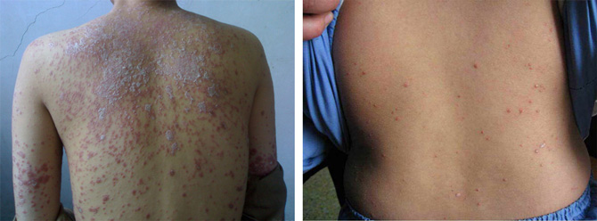
长出新皮，不再害怕半夜痒醒，不再恐惧别人异样眼光，你离正常、美好的生活只差一副苗方！
深受各种皮肤癣病折磨的朋友们快加老师的微信：，他会在微信里为您细心解答，并给出适合的方子，让您半个月排毒，三个月恢复如初！
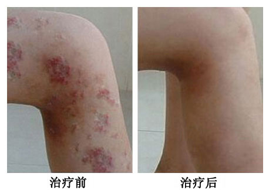
治疗第一天：不再感觉瘙痒难耐，晚上终于能睡个好觉了！
治疗半个月：银屑开始脱落，红疹开始消退。
治疗一个月：银屑脱了一层又一层，开始能感受到长出新的皮肤，太神奇了！
治疗三个月：皮肤癣竟然消失的无隐无踪，新皮肤嫩滑细腻，要不是亲身经历，简直不敢相信！
你若还不信，我们看图说话
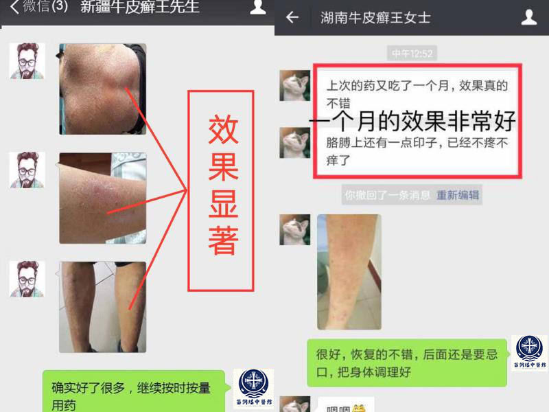
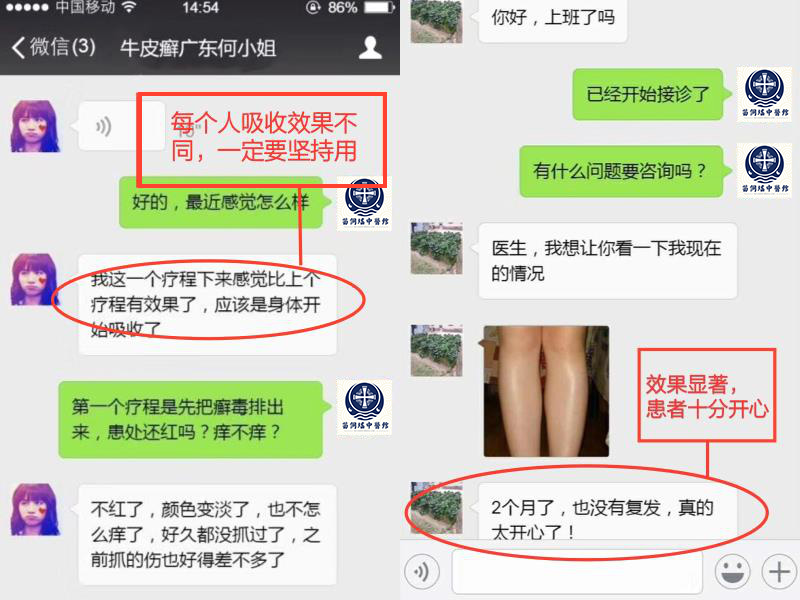
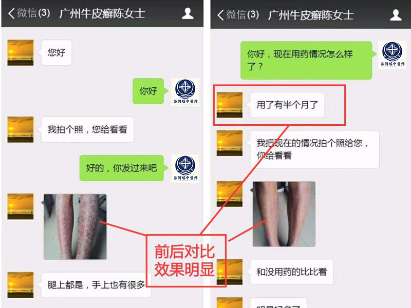
胡老师微信号
很多皮肤癣患者跑断了腿，花光了钱，都是徒劳，后来都没有勇气再去尝试治疗了，因为我曾经也得过皮肤癣，我非常理解这种心情，正因为我曾经也是患者中的一名，现在我可以负责任地告诉大家，这一次就是你皮肤癣病的终点！
});
我有发言权！我十多年的老牛皮，全身被蚕豆大的灰白色鳞屑覆盖，状如松树皮，浑身奇痒无比，一抓就见血。上个月抱着试一试的心态咨询了胡老师，胡老师人很亲切，每天都叮嘱我注意饮食，半个月皮损鳞屑减少，慢慢在消退，现在虽然没有完全康复，但再坚持1月肯定能好！
真的吗？听说苗药拔毒很威猛，想试试，胡老是不是这个微信：
上个月大腿上、背上出了很多小红点，去检查说是急性点滴状皮藓，开了几千块的药，现在半年过去也没好。
去年开始，我上臂、大腿长硬疹子，活像鸡皮疙瘩，一到夏天更痛苦，捂着跟怪物一样，用了很多方法，没一点好转，没有一点改善，跳楼的心都有！
我是皮肤癣，快崩溃了，经常睡觉就痒醒，睡不着我就，越抓越痒，还有明显的破损，还被老婆小孩嫌弃，去了很多医院都没用。这个胡老师看着还可以
亲身体会，希望能帮助大家！以前我总会不相信什么偏方什么的，我十多年前因为工作压力大，应酬喝白酒过量，导致患上了皮癣，从腿上一点到浑身都是，吃中成药雷公藤多苷吃到差不多阳痿，吃迪银片吃的走路打飘，后来胡老师这里看好了。
真的假的？如果是真的多少钱我都愿意去花，患白癜风很多年，到现在30多了还是单身，希望胡教授能帮助我。
刚开始是头上有屑，没注意，结果扩散严重了，看了3年，反复复发，没有好，期间抹药抹的皮肤都起水泡了，而且蛋蛋上面摸一点就起水泡了，走路什么的都不好办，那种感觉你们可懂？前阵子上网，也是无意加了胡老微信，调理了2个疗程，效果还可以。
老师是怎么给你们调理的？我老公也有这方面的问题，皮肤癣年轻时候就有了，试了好多办法都不顶用，这个苗医真能看好皮肤癣吗？
我是脂溢性皮炎，看了之后默默咨询了胡老，真不容易，竟然没有花半分钱就好了。
本人7年鱼鳞，身上有大片棕黑色鳞屑，连换皮手术都不能做，找胡老调理了小半年了，现在长出了新皮，感恩！
有没有这么厉害啊？我皮藓10年了，一天比一天痒，面积也越来越大，现在四肢都霉烂了，鳞屑一层一层的掉，自己都觉得恶心。一直看不好，就因为这，一直处不上对象，要真有这么厉害，那我必须要去看。
我被皮癣折磨了差不多9年了，一直寻医问药，就是看不好。后来去了趟贵州凯里，直接上门找到了胡老师的中医馆，还留了老师的微信，通过老师的精心治疗，现在已经全好了。
是不是真有这么厉害啊？现在大医院都治不好。不好说。
我接受过的调理指导，比较有资格说这个话，胡老师的调理办法效果没得说（我之前寻常型的皮藓有七八年，现在已经完全好了），但是一定要注意一点，那就是必须按她的指导来！调理期间不能随心所欲，这样才能调出好结果。